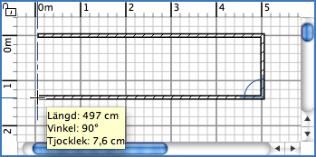

|
|
Rita v�ggar | ||
|
F�r att rita v�ggar m�ste du f�rst v�lja Planl�sning > Skapa v�ggar eller v�lja Skapa v�ggar-verktyget.
Klicka i hemmets planl�sning p� startpunkten f�r den nya v�ggen, klicka eller
dubbelklicka sedan i planl�sningen p� v�ggens slutpunkt. S� l�nge du inte
dubbelklickar eller trycker p� Escape-tangenten s� indikerar varje klick motsatt punkt
p� aktuell v�gg och startpunkten f�r n�sta v�gg. Medan du ritar en upps�ttning v�ggar
kommer startpunkten p� den f�rsta v�ggen kopplas samman till en existerande v�ggs
start- eller slutpunkt om du klickar p� den punkten, och den sista v�ggen kopplas
samman med en annan v�ggs punkt om du dubbelklickar p� den. Om du h�ller nere
Ctrl-tangenten (eller Alt-tangenten p� Mac OS X) medan du klickar p� v�ggens
slutpunkt, s� skapar du en rundad v�g@g och dess b�ge avg�rs av var du klickar den
tredje g�ngen.
 F�r att sluta rita v�ggar v�ljer du Planl�sning > V�lj eller v�ljer V�lj-verktyget.
|
|